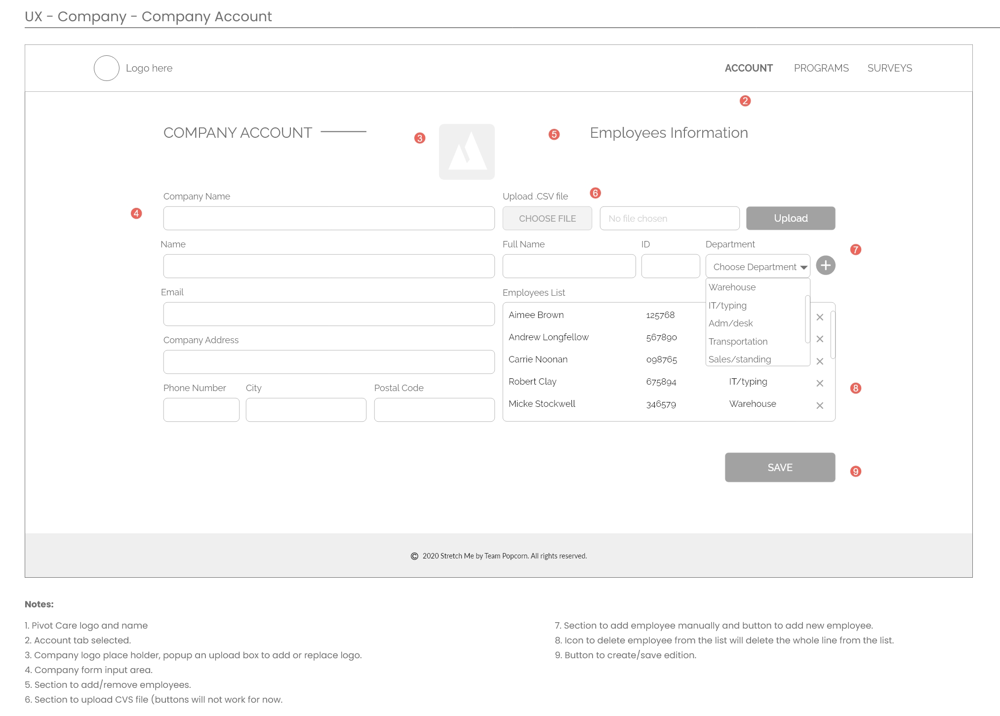
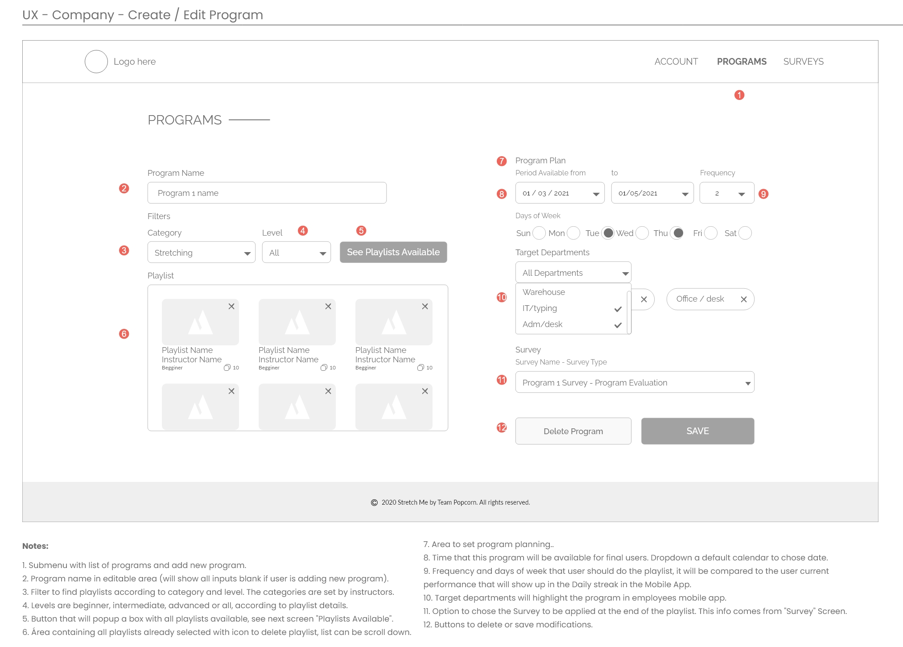
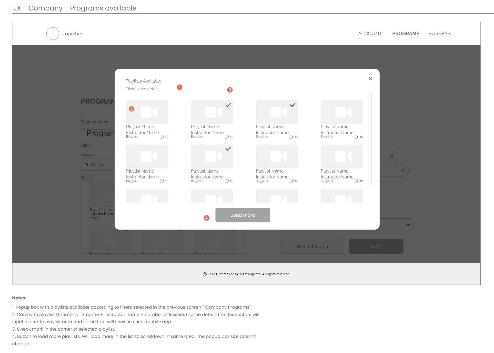
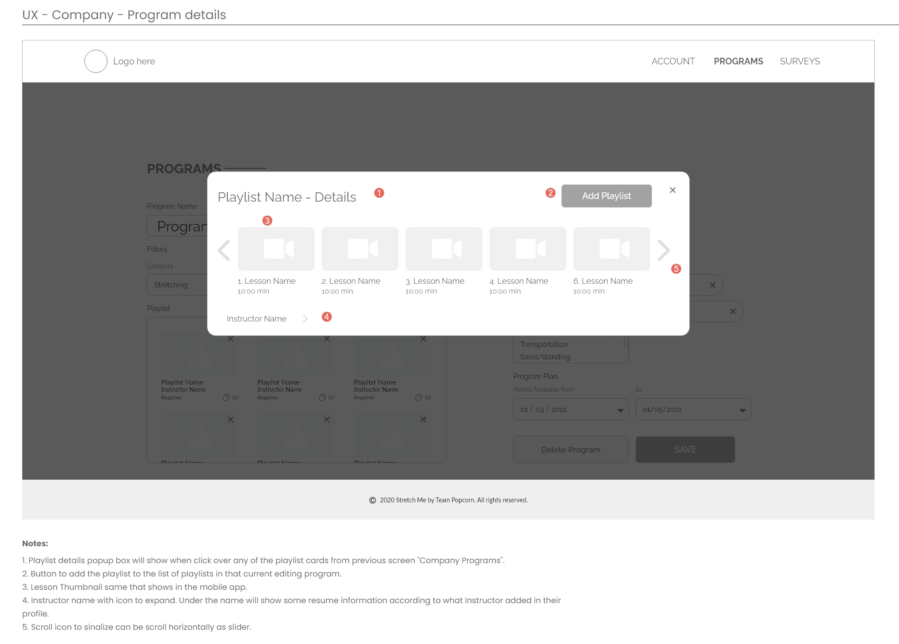
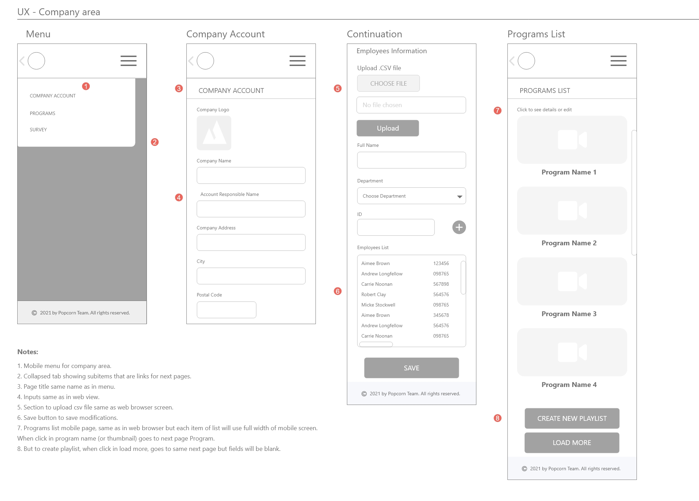
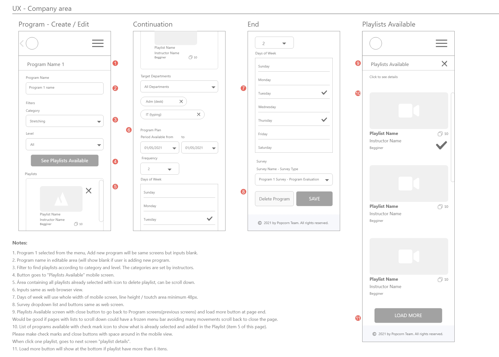
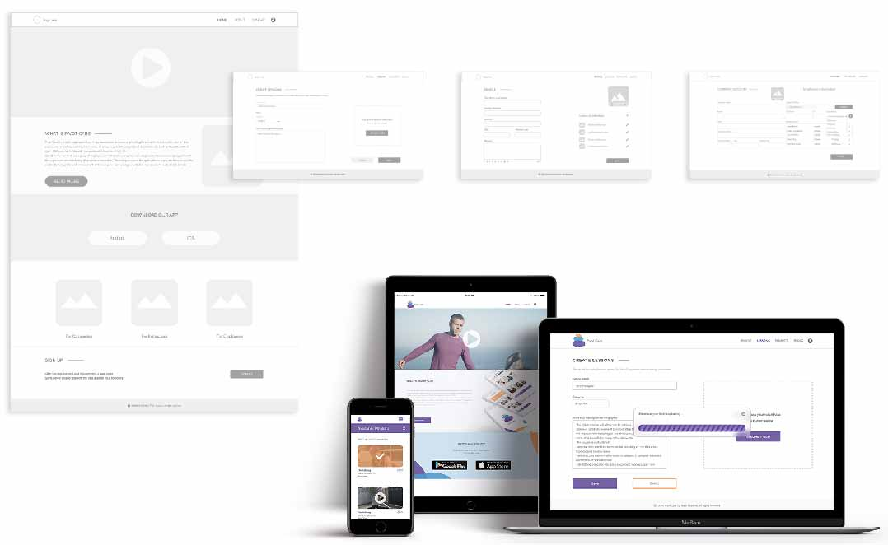
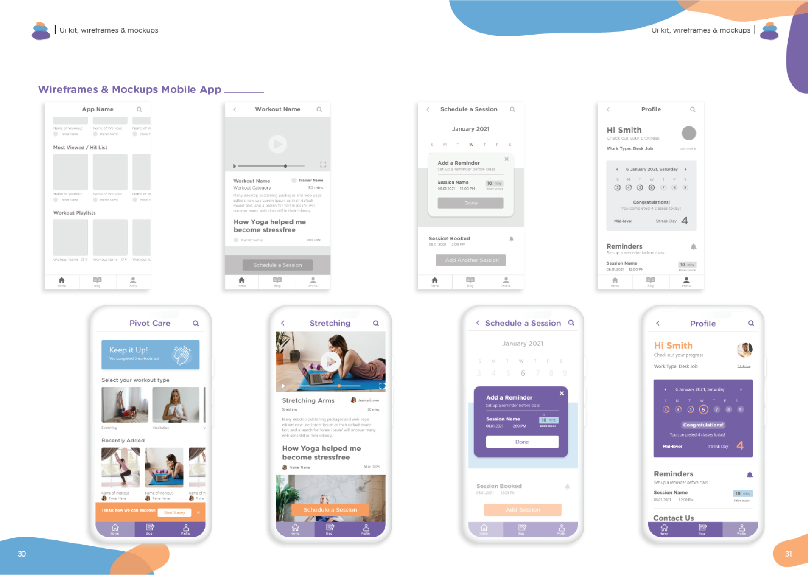
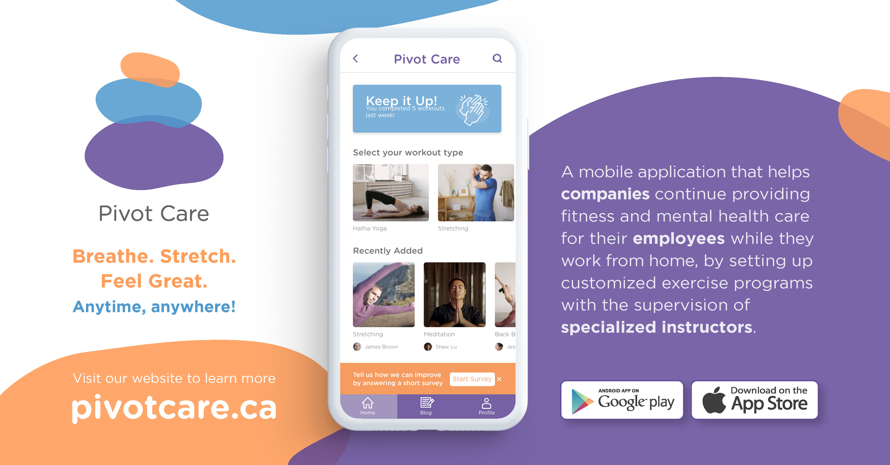
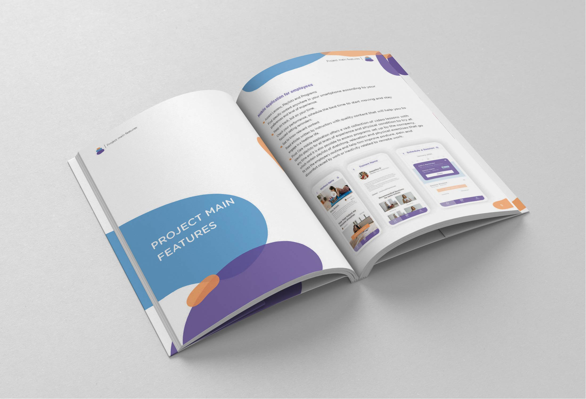

Pivot Care Low-fidelity Wireframes: Company Area
   Pivot Care Low-fidelity Wireframes: Company Area
Mobile Size


Pivot Care Low-fidelity Wireframes High Fidelity Mockups
 Pivot Care Marketing Assets
 Pivot Care
Mobile App & Web Platform
Pivot Care is a mobile application that helps companies to continue providing fitness and mental health care for their employees while they working from home, as a way to prevent occupational related injuries such as Repetitive Strain Injury (RSI) and Work-Related Musculoskeletal Disorders (WRMD).
Based on the needs of each group of employees or individuals, companies can setup customized exercises programs with the supervision and monitoring of specialized instructors. The main purpose of the application is to provide focused activities related to the specific work environment of the company, such as yoga, meditation, and company-wide stretch breaks.
Here you can see some images of this MVP project developed by a team, that are part of the documentation delivered in Capstone Project, the last term of the post-degree diploma in Web & Mobile Design and Development at Langara College.
In this article I will talk about my responsibilities in this project, team design process and explain some of the areas in the project where I worked the most:
- Usability Testing
- Building API content with MS Excel tables
- Video Productions
Problem Statement
We want to help companies to offer efficient alternatives for engagement and awareness about sedentary lifestyle in the home office routine and give alternative ways of work to instructors that need to adapt to remote services.
Solution and Outcomes
We created a responsive platform with two journeys from the landing page:
The HR department journey to upload csv files(or input manually) staff information such as department and job title and add suggestions of playlists and programs for stretching and relaxing exercises that has to do with their job tasks.
The Instructors journey to build a strong profile, upload and describe videos and playlists teaching how to stretch, meditate and do functional exercises according to experience levels.
The mobile app outputs all information in a collection of customized content that aware and engage the final user to discover move themselves and invest in wellbeing and work-life balance.
Project Role and Responsibilities as
UI and UX designer
Participated in the project from concept to deployment of Android and iOS products working with agile methodology.
Built with the team, the user journey, website userflow and web platform wireframes based on three user journeys.
Built with the team, content strategy designing customer experience for the web app area aligned to the B2B goals.
Produced mobile app clickable prototype and applied usability tests and interview, building report with recommendations.
Acted as a UX writer building tables of content to be used in the application with focus in SEO optimization.
Produced videos as Pivot Care teaser and Pivot Care Trailer video for social media marketing pack from scratch using Adobe Suite highlighting interaction design.
Design Process
Empathizing and understanding the problem, which was not difficult considering more than half of the team already had experience with companies that offer ways of physical activity and are concerned about sedentary lifestyles and everyone in the team has been suffering from the lack of mobility caused by remote work and difficulty in planning outdoor activities. We discussed and interviewed the team members that already had experience with these companies, all the team members instaled free trials of a list of possible competitors to try along a week and we discussed about all of them.
Defining the problem, minimum scope, unique value preposition, fair advantages and success criteria. The team made it through a Lean Canvas method.
Ideating phase was made brainstorming and sketching a key message and list of possible solutions that we could offer according to sources and time available, designing personas and journeys analyzing pain points and also checking competitors and similar digital products and solutions. The main challenge was make the concept appealing to people who are not physically active and/or who do not have fitness as a priority. For example, in designing the brand, we opted for calmer colors and softer color palettes compared to exercise applications available on the market.
Designing userflow, low fidelity wireframes and interactions while development team build rough IA structure and flow. In this phase, the most difficult part was gathering and transforming the task list of the company's representative user into an intuitive flow, since the journey of offering and suggesting physical activities to the company's employees did not seem very intuitive initially.
In the testing phase, while designers were applying usability test, the team reviewed and reorganized schedule adjusting according to remain time and sources focusing in a safe defined deadline. This was where the team stood out the most, as the team of developers and designers had very open communication as a priority and very honest discussions about what could be fully implemented by the deadline, designers were able to adjust, follow closely and participate of implementation. In the relationship of UI versus Front-end, this communication is one of the great differentials for completing a consistent UI.
Implementation, checkup of SEO requirements, design requirements, testing in many devices as possible building a bug list. Again, the interest of everyone involved in the process to deliver the best result resulted in an intense period of testing the platform in all available formats, sizes and browsers resulting in a consistent delivery.
Finalization and conclusion of all documentation related to the project including marketing and business material, business pitch and demos.
1 | Usability Testing
While developers were building the structure and when the branding and minimum design style were already approved by the team, designers created a high-fidelity clickable prototype in Adobe XD, while I built a usability test plan and script.
The clickable prototype was tested by designers first, to check all flows and back-flows and later by 5 users, supervised by designers using remote moderated method individually or by Zoom meeting.
In the moderated method, according to script, we started with a interview with two type of questions, closed questions to get demographic info and basic knowledge about technologies and most used devices and open questions, after a breath intro about the app concept, we wanted to know the user's level of knowledge about this type of application
After this short interview we send started the moderated test:
From a list of 10 tasks, we asked to user to complete them one by one, according to the script provided. Giving time and staying in silence, taking note and about user behavior and user comments.
After the tests, I was responsible for grabbing the data and add to a table where we classified the tasks in three levels: Easily done, Done with complains and Not completed.
Analyzing this table and the importance of each task in the application main flow, we organized the issues based on Rolf Molich and Robin Jeffries three-point scale of issues:
Minor: Causes some hesitation or slight irritation.
Moderate: Causes delays and moderate irritation.
Critical: Leads to task failure. Causes user extreme irritation.
Each of the issues were explained in the report and I suggested the changes that could inprove usability related to that issue considering the project limitations.
2 | Building API content with MS Excel
After deciding the quantity and position of content in the landing page and the mobile application, developers created a diagram do organize the information architecture and from that, they build an Excel table which I filled with content according to the subjects and number of characters according to high-fidelity wireframes.
The videos, images used in the thumbnails and profile, description, video/playlist/programs names were carefully created from search about the topics wellbeing, mental health, yoga, stretching and functional exercises. and following the detailed numbered structure with indices as per the proposed structure, the Microsoft Excel file was used to build the necessary IPA for the platform's database.
3 | Video Productions
The design team built a script considering the 3 personas involved: HR person, Instructor and home office employee. We chose a high bit sound track to engage viewers and tried to make a simple plot to translate the app concept without the formal presence of an announcer.
After setting the script, we started to work in the motion graphics used, as high-fidelity prototype gifs, exaggerated bottom animations and logo animation.
I personally worked building the Trailer and Teaser working in the Adobe Premiere using videos from the clickable prototypes and logo animation from the design team made in Adobe After Effects. Inserting a section of videos feedback in our one week sprint, I could get each team member feedback to keep improving until de due date.
This is the MVP was produced in 11 weeks by a team of 4 developers and 3 designers for Capstone project at Langara College concluding WMDD post-degree course in April 2021. This project was nominated in Capstone Show Case Event by the panelists as "Best in Show" competed this place with other two extensive web and mobile projects.
You can check the Pivot Care Proposal full document and access the website here.
Please contact me to talk more about this project or you can go back to Home to see my other projects.